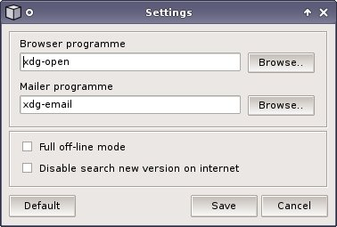

| Browser programme | select browser programme; erase text, if you want to use default browser of system |
| Mailer programme | select mailer programme; erase text, if you want to use default mailer of system |
| Full off-line mode | disable links, upgrade and upgrade search |
| Disable search new version on internet | disable database and application upgrade search |
| Default | set default programmes and on-line mode |